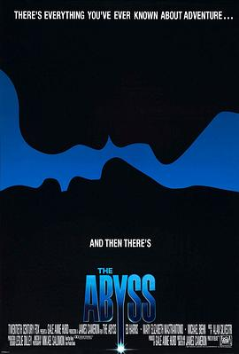

深渊 / The Abyss
又名：无底洞 / 深海水怪
1989年，年代分满分，这是我大一看的，当时太震撼了！剧情也很精彩！
作品信息
| 导演 | 詹姆斯·卡梅隆 |
| 编剧 | 詹姆斯·卡梅隆 |
| 主演 | 艾德·哈里斯 / 玛丽·伊丽莎白·马斯特兰托尼奥 / 迈克尔·比恩 / 里奥·伯梅斯特 / 托德·格拉夫 / 约翰·贝德福德·劳埃德 / J·C·奎因 / 金伯利·斯科特 / 小基德·布鲁尔 / George Robert Klek / 克里斯托弗·墨菲 / Adam Nelson / 迪克·沃洛克 / 吉米·雷·威克斯 / J. Kenneth Campbell / 肯·詹金斯 / 克里斯·艾略特 / Peter Ratray / 迈克尔·比奇 / 布拉德·苏利文 |
| 类型 | 剧情 / 科幻 / 悬疑 / 惊悚 / 冒险 |
| 制片国家/地区 | 美国 |
| 语言 | 英语 |
| 上映日期 | 1989-08-09(美国) |
| 片长 | 140分钟 / 171分钟(剪辑版) |
| IMDb | tt0096754 |
最后一次看到是 2026-08-01T11:06:46+10:00 · 豆瓣原页